CoDA
Agentic Systems for
Collaborative Data Visualization
Specialized LLM agents collaborate through metadata analysis, task planning, code generation, and self-reflection to automate data visualization.


* Work done during a research internship at Google Cloud AI Research.
Abstract
Deep research has revolutionized data analysis, yet data scientists still devote substantial time to manually crafting visualizations, highlighting the need for robust automation from natural language queries. However, current systems struggle with complex datasets containing multiple files and iterative refinement. Existing approaches, including simple single- or multi-agent systems, often oversimplify the task, focusing on initial query parsing while failing to robustly manage data complexity, code errors, or final visualization quality. In this paper, we reframe this challenge as a collaborative multi-agent problem. We introduce CoDA, a multi-agent system that employs specialized LLM agents for metadata analysis, task planning, code generation, and self-reflection. We formalize this pipeline, demonstrating how metadata-focused analysis bypasses token limits and quality-driven refinement ensures robustness. Extensive evaluations show CoDA achieves substantial gains in the overall score, outperforming competitive baselines by up to 41.5%. This work demonstrates that the future of visualization automation lies not in isolated code generation but in integrated, collaborative agentic workflows.
How CoDA Works
Four collaborative phases powered by specialized agents. Click each stage to explore.
Understanding
Planning
Generation
Self-Reflection
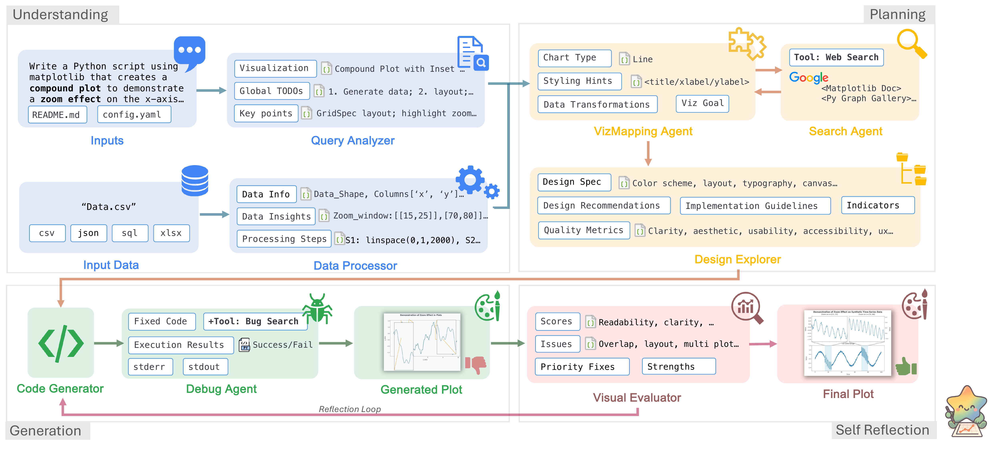
Agent Collaboration Trace
A browser-usage sunburst query walks through the full pipeline, including diagnostic feedback loops. Click each step to expand.
Query Agent + Data Agent
"Create a sunburst chart showing browser market share by version from the provided dataset."
Task list: load data, parse hierarchy (browser → version), compute share %. Viz type: sunburst. Key columns: browser, version, share.
Schema: 5 browsers × 22 versions, 2-level hierarchy. Total share sums to 100%. No missing values.
Design Agent + Search Agent
Chart: nested sunburst. Palette: distinct hue per browser (Chrome=blue, Firefox=orange, Safari=grey, Edge=green, Opera=red). Labels: radial text on outer ring, percentage on inner ring.
Retrieved 3 examples: nested pie with ax.pie(), stacked-donut sunburst, label rotation patterns. Similarity: 0.89, 0.85, 0.81.
Code Agent + Debug Agent
142-line script: data loading, hierarchy parsing, nested ax.pie() rings with per-browser color maps, radial labels, percentage annotations.
Execution successful. No runtime errors. Image rendered.
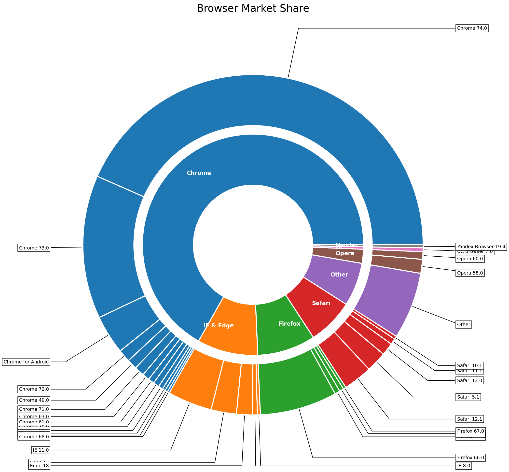
Eval Agent
Issues: (1) outer-ring labels overlap at small slices, (2) inner-ring text collides with wedge borders, (3) color contrast too low for Safari segments.
Design Agent ← low aesthetics & layout | Code Agent ← label collision fix
Design Agent (re-triggered)
Hide text for slices < 3%, leader lines for 3–5%. Safari: light-grey → steel-blue. Inner ring: percentages repositioned outside wedge borders.
Code Agent + Debug Agent (re-triggered)
+18 lines: conditional label hiding, annotate() with leader lines, Safari color map updated, inner-ring text offset.
Execution successful. No runtime errors.
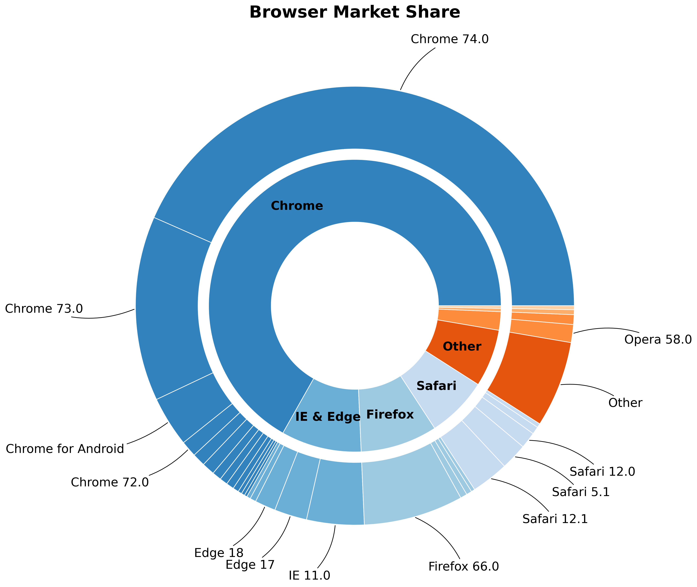
Eval Agent (converged)
Correct chart type, accurate hierarchy, clean labels with leader lines, proper color contrast. All dimensions above θq = 0.85.
Experimental Results
Comprehensive evaluation across multiple benchmarks and human expert studies.
MatplotBench & Qwen Code Interpreter
gemini-2.5-pro| Method | MatplotBench | Qwen Code Interpreter | ||||
|---|---|---|---|---|---|---|
| EPR | VSR | OS | EPR | VSR | OS | |
| MatplotAgent | 97.0 | 56.7 | 55.0 | 81.6 | 79.7 | 65.0 |
| VisPath | 75.0 | 37.3 | 38.0 | 86.5 | 94.3 | 81.6 |
| CoML4VIS | 76.0 | 69.7 | 53.0 | 87.1 | 90.9 | 79.1 |
| CoDA (Ours) | 99.0 | 79.8 | 79.5 | 93.3 | 95.4 | 89.0 |
DA-Code Benchmark (Overall Score %)
SWE-levelHuman Expert Evaluation on MatplotBench
3 experts · 200 charts| Method | Elo | Harmony | Balance | Color | Simplicity | Query Al. |
|---|---|---|---|---|---|---|
| MatplotAgent | 1506 | 3.65 | 3.65 | 3.53 | 4.31 | 3.63 |
| VisPath | 1484 | 2.71 | 2.71 | 2.65 | 2.92 | 2.78 |
| CoML4VIS | 1309 | 3.16 | 3.22 | 3.22 | 4.00 | 3.59 |
| CoDA (Ours) | 1701 | 4.82 | 4.73 | 4.96 | 4.94 | 4.86 |
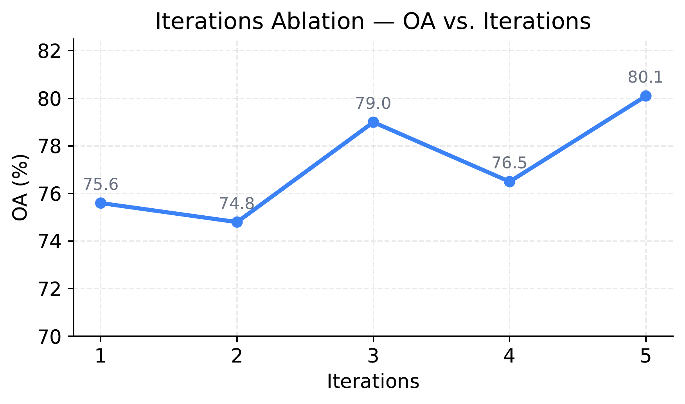
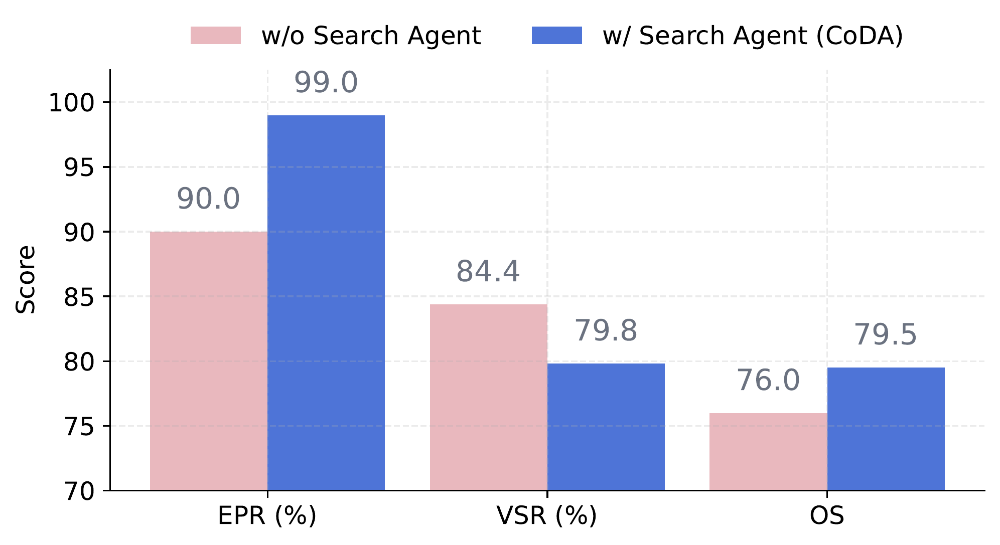
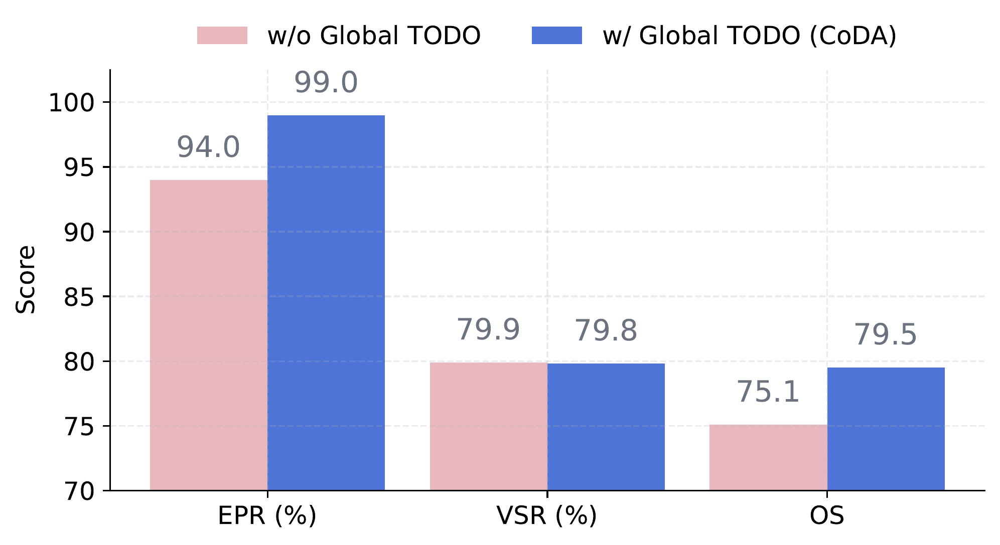
Visualization Gallery
CoDA outputs compared side-by-side with ground truth across diverse benchmarks.

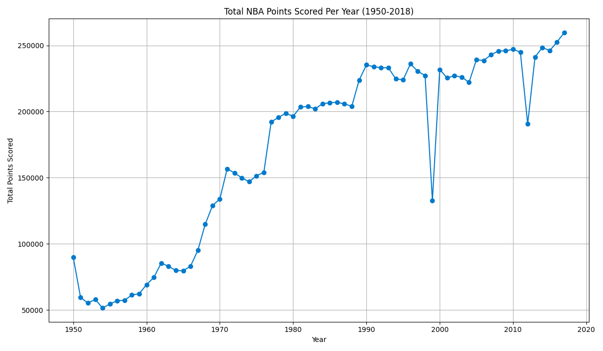
CoDA Output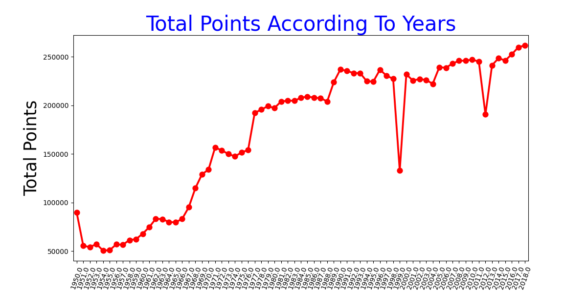
Ground Truth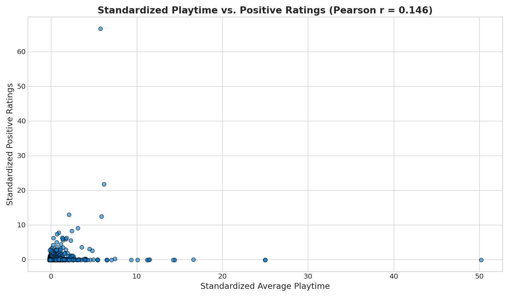
CoDA Output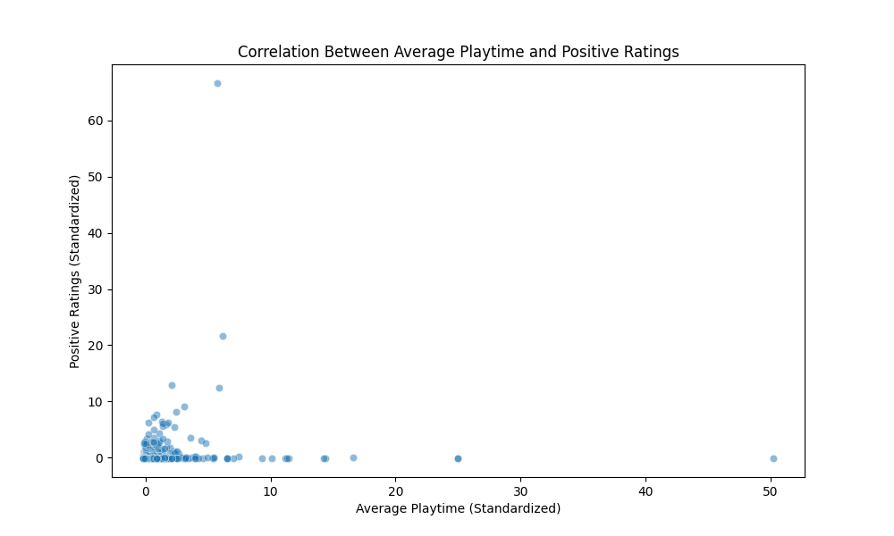
Ground Truth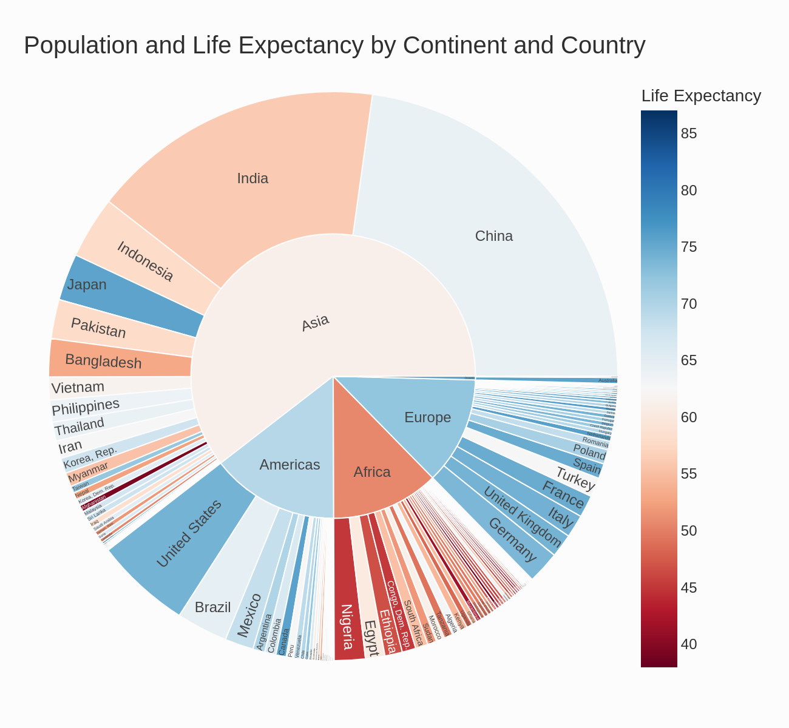
CoDA Output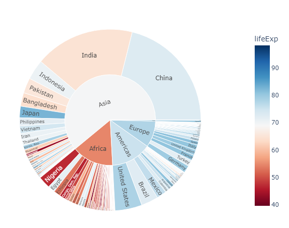
Ground TruthCitation
Key Findings
- CoDA achieves a 41.5% improvement on the MatplotBench benchmark over prior state-of-the-art methods.
- CoDA scores 89.0% on the Qwen Code Interpreter benchmark, establishing a new state-of-the-art.
- CoDA achieves 39.0% on DA-Code, approximately 2x the previous state-of-the-art performance.
- In human expert evaluation, CoDA attains an Elo rating of 1701, significantly outperforming all baselines.
- The framework uses 8 specialized LLM agents organized across 4 collaborative phases: Understanding, Planning, Generation, and Self-Reflection.